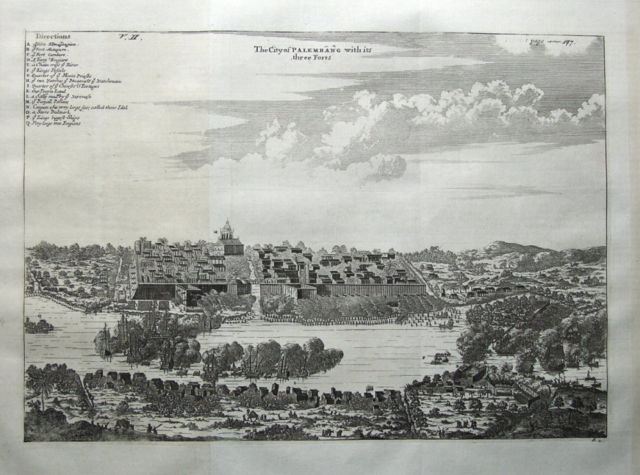
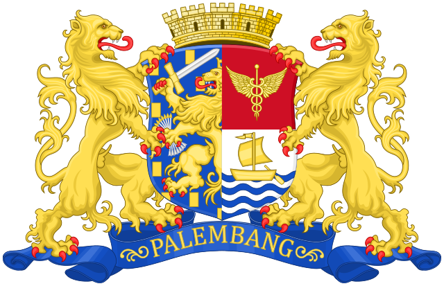

Sejarah

Nenek moyang orang Palembang menamakan kota ini sebagai Pa-lembang yang bermakna Pa atau Pe sebagai suatu tempat atau keadaan dan Lembang atau Lembeng artinya tanah yang rendah, lembah akar yang membengkak karena lama terendam
air (menurut kamus melayu), sedangkan menurut bahasa Melayu Palembang, lembang atau lembeng adalah genangan air. Jadi Palembang adalah suatu tempat yang digenangi oleh air.
Geografis

Secara geografis, Palembang terletak pada 2°59′27.99″LS 104°45′24.24″BT. Luas wilayah Kota Palembang adalah 400,61 km², dengan ketinggian rata-rata 8 meter dari permukaan laut. Letak Palembang cukup strategis karena dilalui oleh
jalan Lintas Sumatra yang menghubungkan antar daerah di Pulau Sumatra.
Iklim & topografi
Iklim Palembang merupakan iklim daerah tropis dengan angin lembap nisbi, kecepatan angin berkisar antara 2,3 km/jam–4,5 km/jam. Suhu kota berkisar antara 23,4–31,7 derajat celsius. Curah hujan per tahun berkisar antara 2.000
mm–3.000 mm. Kelembaban udara berkisar antara 75 – 89% dengan rata-rata penyinaran matahari 45%. Topografi tanah relatif datar dan rendah. Hanya sebagian kecil wilayah kota yang tanahnya terletak pada tempat yang agak tinggi,
yaitu pada bagian utara kota. Sebagian besar tanah adalah daerah berawa sehingga pada saat musim hujan daerah tersebut tergenang. Ketinggian rata-rata antara 0 – 20 m dpl.
Logo zaman kolonial

Pada zaman kolonial, lambang Kota Praja (gemeente) Palembang berupa singa kembar memegang perisai bermahkota benteng, dan di bawahnya pita bertuliskan "Palembang". Pada bagian perisai terdapat gambar Singa Nassau separuh,
Tongkat Caduceus, serta perahu layar di atas lautan. Lambang daerah Kota Palembang modern dikukuhkan dengan Keputusan Dewan Perwakilan Rakyat Daerah Kota Besar Palembang No. 36/DPRDK/1956. Rd. Muhammad Ikhsan, sejarawan Kota
Palembang memerinci desain lambang daerah Kota Palembang menjadi 3 bagian. Bagian-bagian tersebut diperinci sebagai berikut: 1). sirah berwarna merah tua kecokelatan dengan 18 tanduk lembaran daun teratai, 2). bunga melati yang
belum mekar 3). puncak rebung kuning emas berjumlah 8 (Agustus), 4). Bukit Siguntang bersinar 17, 5). sembilan aliran sungai (empat melambangkan Sungai Musi, Ogan, Komering, dan Lematang) 6). motto daerah Palembang djaja, berarti
"Jayalah Kota Palembang". Ditulis dengan ejaan Soewandi, karena dibuat sebelum tahun 1972 (pemberlakuan EYD).
Wisata
Sungai Musi

sungai sepanjang sekitar 750 km yang membelah Kota Palembang menjadi dua bagian yaitu Seberang Ulu dan seberang Ilir ini merupakan sungai terpanjang di Pulau Sumatra. Sejak dahulu Sungai Musi telah menjadi urat nadi perekonomian
di Kota Palembang dan Provinsi Sumatra Selatan. Di sepanjang tepian sungai ini banyak terdapat objek wisata seperti Jembatan Ampera, Benteng Kuto Besak, Museum Sultan Mahmud Badaruddin II, Pulau Kemaro, Pasar 16 Ilir, rumah
Rakit, kilang minyak Pertamina, pabrik pupuk PUSRI, pantai Bagus Kuning, Jembatan Musi II, Masjid Al Munawar, dll.
Jembatan Ampera

sebuah jembatan megah sepanjang 1.177 meter yang melintas di atas Sungai Musi yang menghubungkan daerah Seberang Ulu dan Seberang Ilir ini merupakan ikon Kota Palembang. Jembatan ini dibangun pada tahun 1962 dan dibangun dengan
menggunakan harta rampasan Jepang serta tenaga ahli dari Jepang.
Masjid Agung Palembang

Sultan Mahmud Badaruddin I Palembang, terletak di pusat Kota Palembang, masjid ini merupakan masjid terbesar di Sumatra Selatan dengan kapasitas 15.000 jemaah & Dll.